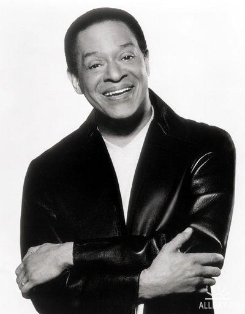

The Jazz Legend Al Jarreau Passed Away At 76
Al Jarreau, the jazz-pop musician best known for the hits “Breakin’ Away,” “We’re in This Love Together” and the theme song to the popular 1980’s TV show, “Moonlighting,” died Sunday, according to posts on his verified social media accounts. He was 76.
His death was announced by his manager, Joe Gordon, who said that Mr. Jarreau had been hospitalized for exhaustion two weeks ago. On the advice of his doctors, he had canceled his tour dates and retired from touring.
Born and raised in Milwaukee, Jarreau’s unique singing style helped to make him one of jazz’s greatest vocalists. During college, where he received a Bachelors of Arts in Psychology, Jarreau performed with a local group called The Indigos before moving to San Francisco. There he hooked up with fellow jazz great George Duke to form a trio.
In 1975, Jarreau was working with pianist Tom Canning when he was spotted by Warner Bros. Records. On Valentine’s Day 1976 he sang on the 13th episode of NBC’s new Saturday Night Live, that week hosted by Peter Boyle. Soon thereafter he released his critically acclaimed debut album, We Got By, which catapulted him to international fame and garnered him an Echo Award (the German equivalent of the Grammy’s in the United States).
Jarreau received a total of seven Grammy Awards and was nominated for over a dozen more. Rest in peace legend.
Milena Staniskovska